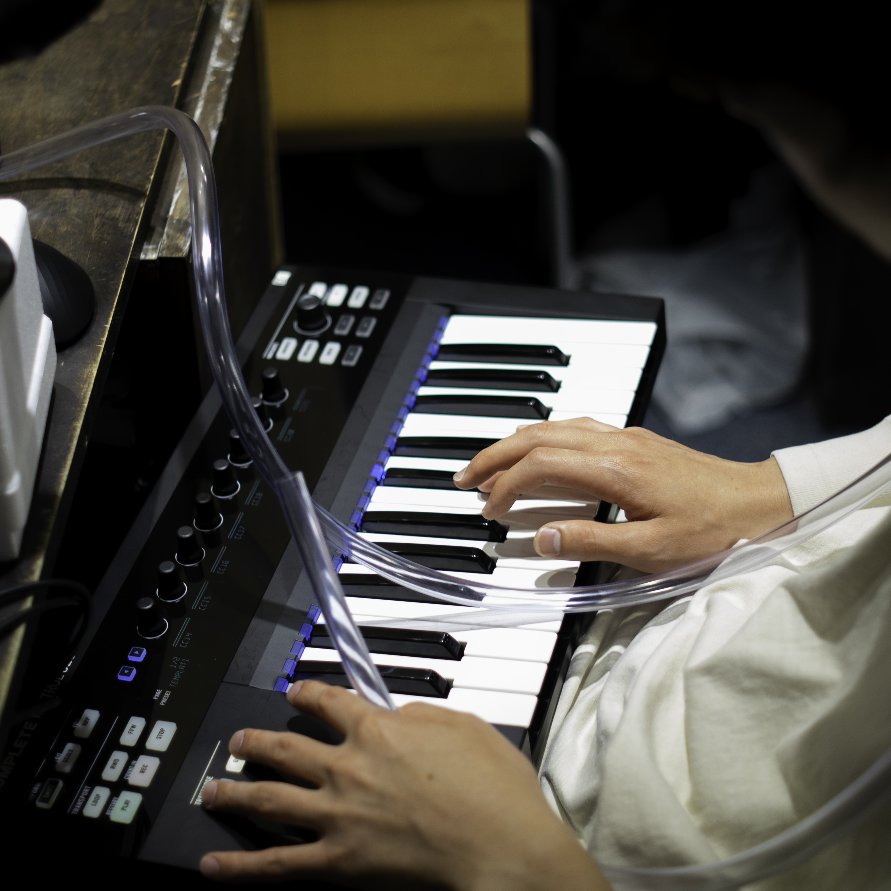
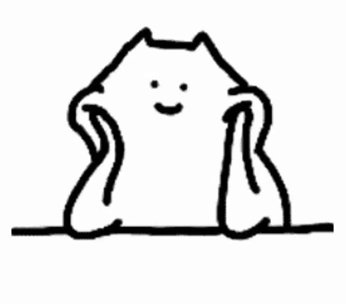
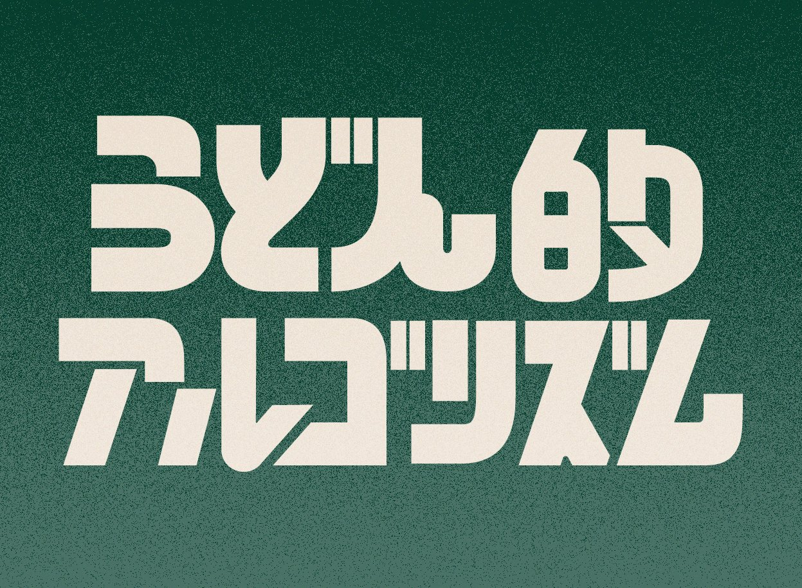
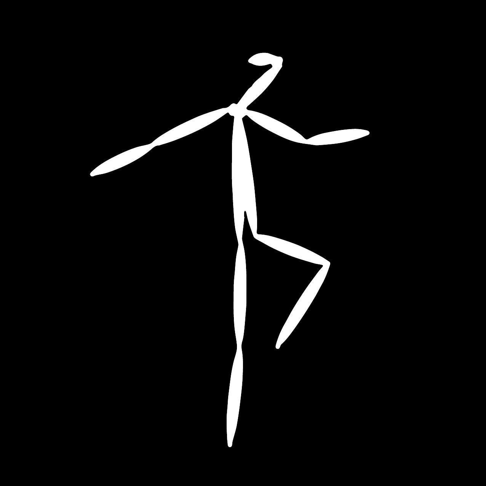

About
主催：NxPC.Lab
NxPC.Labは、クラブやライブにおけるアーティストと観客の相互作用によってもたらされる場の臨場感を拡大し、ネットへも拡散させるためのメディアテクノロジーの実現を目指した研究機関です。
現代のメディア体験において必要とされる対話性、参加性をデバイス、インタフェース、ネットワークといったメディアテクノロジーを駆使することで、音楽体験を拡張し、音楽空間におけるコミュニケーションを次のステージへ導くための研究開発、イベントを実施しています。実験の場としてのイベントNxPC.Liveを中心に、レクチャーやワークショップ、ネットラジオなどの活動を行っています。
Info
NxPC.Live vol.56 屋台再開 あせだくつゆだく暑い夏
| Date | : | 2022.6.18 Sat. |
| Open | : | 17:00 |
| Start | : | 17:05 |
| Close | : | 20:40 |
Timetable
| DJ | Ryu Ishizuka |
| 17:00 | Open |
| 17:05 | 書記ユニット |
| 17:30 | ルレン |
| 17:55 | zumishio(with. Ryu, Ose) |
| 18:35 | JACKSON kaki |
| 19:15 | 大垣食文化研究会 |
| 19:45 | 作業用BGM |
| 20:15 | 線対称 |
| 20:35 | 森林玩偶 |
| 20:40 | Close |
Performers

Ryu Ishizuka
Dancer, DJ

Jackson KAKI
Virtual ⇔ Real DJ

ルレン
ちゃんと聞きなさい！

zumishio
音楽を通して身体拡張します

大垣食文化研究会
人に吸われるだけではかわいそうじゃありませんか⁉️うどんはもっと自律的に運動するべきです‼️‼️‼️

作業用BGM
強く殴る
森林玩偶
かわいく行きたい

線対称
アンビエント歩行